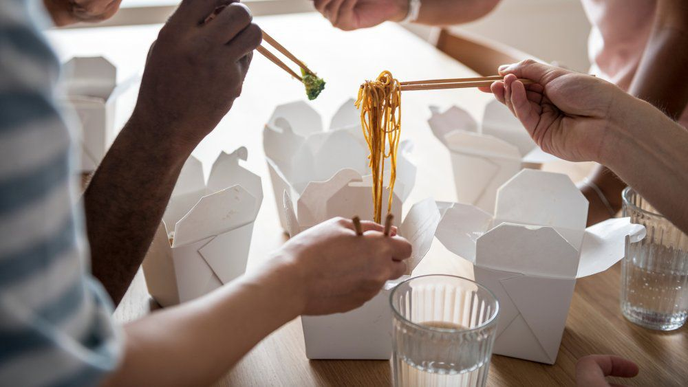
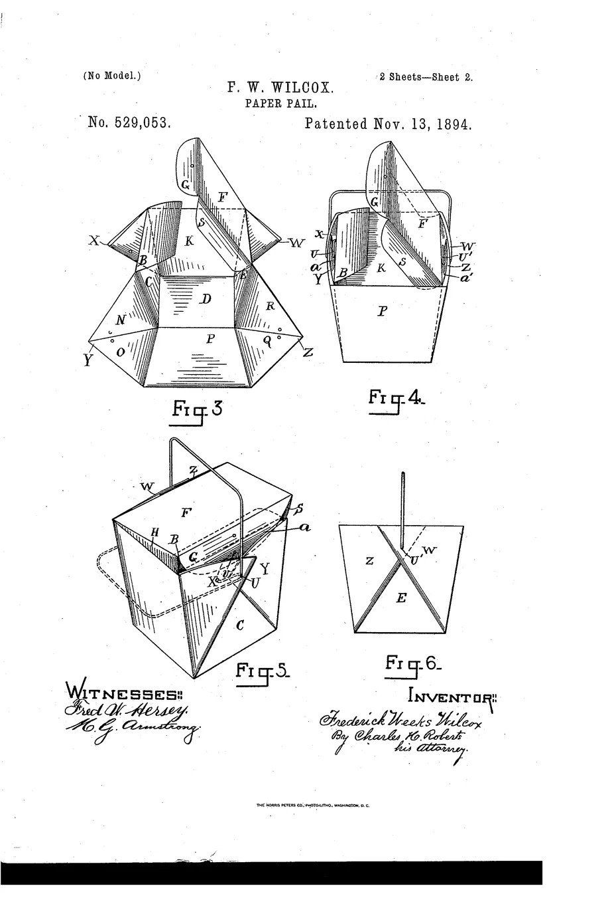
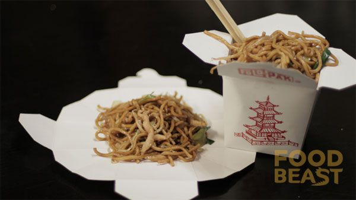
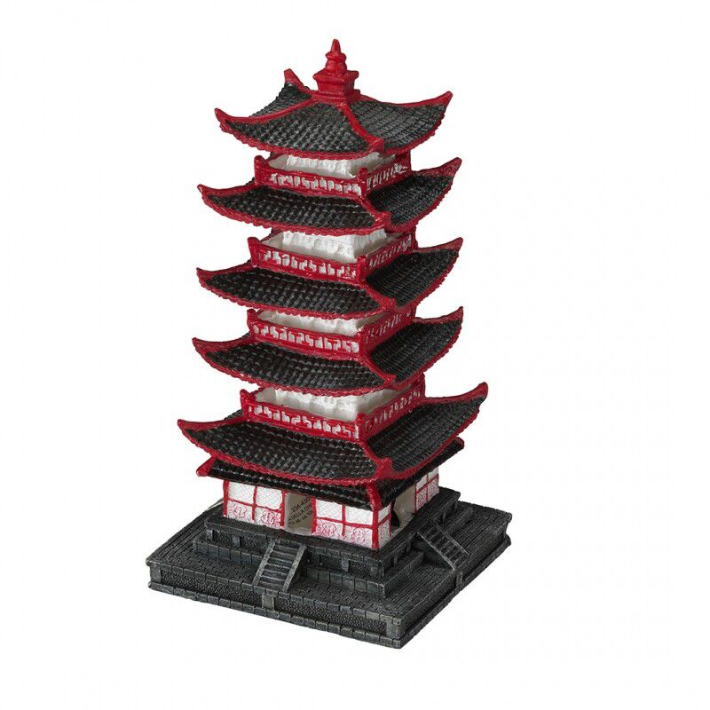
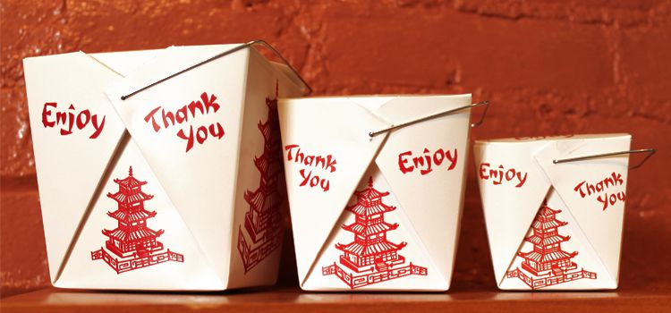
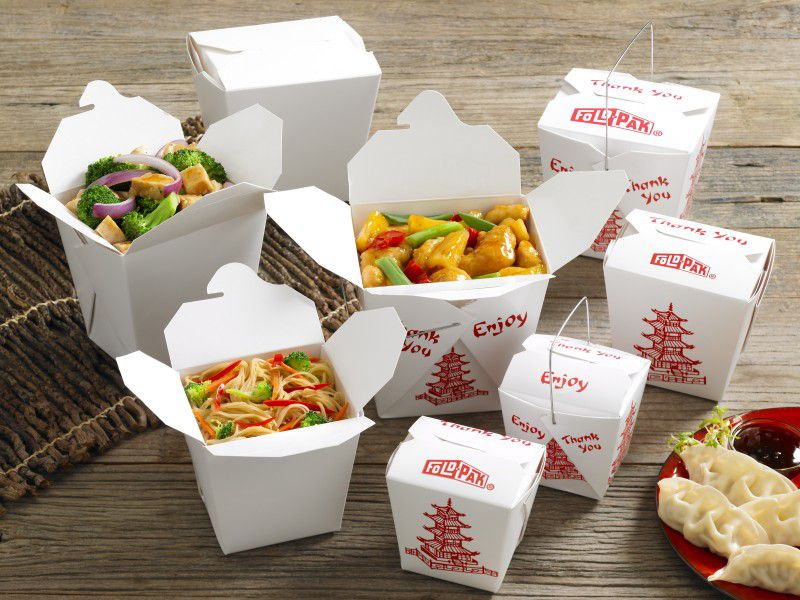
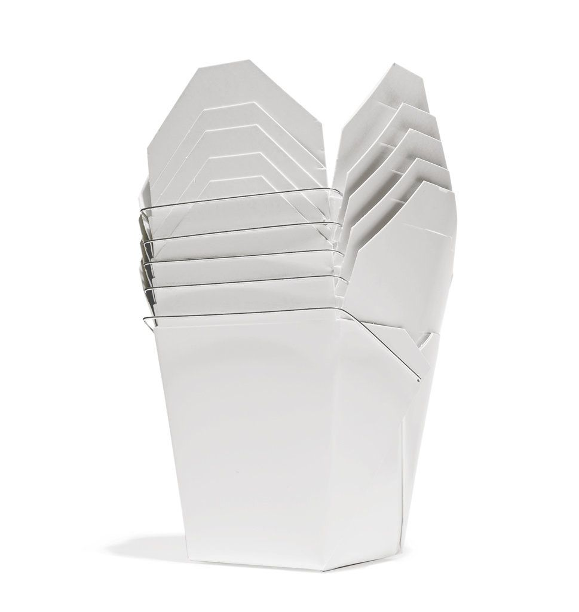

+++
title = "İkonik Tasarımlar: Çin Paket Servis Kabı"
seotitle="İkonik Tasarımlar: Çin Paket Servis Kabı Oyster Pail"
description="Tek kullanımlık gıda kapları söz konusu olmuşken de bu konuda Çin paket servis kabı kadar ikonik bir şey yoktur. Bu ambalaj ayrıca Oyster Pail olarak geçmekte."
url="sayi-8/ikonik-tasarim-oyster-pail"
aciklama="Pandemiyle birlikte artan gel-al paket servisi, tek kullanımlık servis paketlerine ihtiyacı oldukça arttırdı ve paket serviste restoranların yemekleri muhafaza etmek için kullandıkları tek kullanımlık kaplarda da iyileştirmeye gidilmesine başlandı. Tek kullanımlık gıda kapları söz konusu olmuşken de bu konuda Çin paket servis kabı kadar ikonik bir şey yoktur."
type="sayfa"
thumb="/img/cin-paket-servis-paketi-thumbnail.jpg"
date = "2021-04-01"
sayi=["08"]
sayfa="05"
yazar=["zeynep dag"]
tags= ["ana sayfa", "dergi"]
+++

<div class="container">
   <h2>The Chinese Takeout Container</h2>
   <h3>Oyster Pail</h3>

   <div class="row">
      <div class="col-md-6">
         <p>
            {{}}
         </p>
      </div>
      <div class="col-md-6">
         <p>
            Pandemiyle birlikte artan gel-al paket servisi, tek kullanımlık
            servis paketlerine ihtiyacı oldukça arttırdı ve paket serviste
            restoranların yemekleri muhafaza etmek için kullandıkları tek
            kullanımlık kaplarda da iyileştirmeye gidilmesine başlandı. Tek
            kullanımlık gıda kapları söz konusu olmuşken de bu konuda
            <strong>Çin paket servis kabı</strong> kadar ikonik bir şey yoktur.
         </p>
         <p>
            İsmi sizi çokta yanıltmasın, kesinlikle Çin&#39;den veya
            Asya&#39;nın başka bir yerinden gelmediler. Kendisi tamamen Amerikan
            yaratımı olmasına rağmen başlangıcından beri Çin mutfağı ile
            ilişkilendirilmiştir. Muhteşem bir origamiden ilham alan tasarıma
            sahiptir.
         </p>
      </div>
   </div>

   <h3>Çin Paket Servis Kaplarının Kökeni</h3>
   <div class="row">
      <div class="col-md-6">
         <p>
            1894&#39;te Chicago&#39;da Çin paket servis kabının patentini alan
            <strong>*</strong>Frederick Weeks Wilcox*, tek parça kağıttan,
            parçalara bölünüp katlanarak ve üstünde tel tutacağı ile sızdırmaz
            bir <strong>&#39;kağıt kova&#39;</strong> yarattı. Destek kıvrımları
            dışarı katlanıyordu ve bu sayede düz bir iç yüzey oluşturuyordu.
            Böylelikle kutu içindeki yiyecekleri tabağa düzgün bir şekilde
            kaydırmak oldukça kolaydı.
         </p>
         <p>
            Bu origamik yapıdaki kutunun ilhamını aslında bir istiridye
            kovasından almıştı. (Bu nedenle ismi
            <strong>Oyster pail</strong> olarak da geçiyor yani
            <strong>İstiridye kovası.</strong>) İstiridyeler eskiden bugünkünden
            daha popüler, bol ve ucuzdu. İstiridyeleri parmakları kesmeden
            ayıklamak büyük bir marifet gerektiriyordu, bunu satıcıdan
            ayıklanmış bir şekilde almak iyi bir fikirdi. İstiridyeler
            ayıklandıktan sonra etin temiz sızdırmayan bir kapta evlere
            taşınması gerekiyordu. Satıcı tarafından geliştirilen kağıt
            istiridye kovası, bu iş için ucuz ve hijyenik bir olanak sağladı.
         </p>
      </div>
      <div class="col-md-6">
         {{}}
      </div>
   </div>

   <h3>Çin - Amerikan Restoranları</h3>
   <p>
      Çin yemekleri, 1800&#39;lerin ortalarında Kaliforniya&#39;ya göçen Çinli
      halkın kendi mahallelerinde açtıkları Çin restoranları ile başladı.
      Başlarda daha geleneksel olan bu restoranlar, Amerikan halkı tarafından
      çok benimsenmemişti. Çin restoranları genellikle iki menüye sahipti; biri
      geleneksel <strong>Çin yemekleri</strong> diğeri daha fazla Amerikan damak
      tadına hitap eden bir menüydü.
      <strong>&#39;Amerikan yemekleri&#39;</strong> gittikçe daha popülerleşti
      ve çoğu insanın Çin yemeğini düşündüklerinde hayal ettikleri şeye dönüştü.
      Yani aslında Çin yemek kaplarının içindeki yemekler de Amerikandı : )
   </p>
   <div class="row">
      <div class="col-md-6">
         <p>
            
         </p>
      </div>
      <div class="col-md-6">
         <p>
            
         </p>
      </div>
   </div>

   <p>
      <strong
         >New York Yiyecek ve İçecek Müzesi&#39;nin yönetici müdürü Peter Kim;
         <em
            >&quot;Görüyorsunuz ve tam olarak ne anlama geldiğini
            biliyorsunuz,&quot;</em
         ></strong
      >
   </p>
   <p>
      <strong
         ><em
            >&quot;Oldukça şaşırtıcı bir tasarım parçası. Hepsi tek bir kağıt
            parçasından kesilmiş ve katlanmış, böylece herhangi bir ek yeriniz
            yok. Bunun anlamı, sıvıların gerçekten dışarı sızabileceği bir yer
            olmadığıdır.&quot;</em
         ></strong
      >
   </p>
   <p>
      <strong
         >İçerideki yemeklere gelince: Kim,
         <em
            >&quot;Çin-Amerikan mutfağı, Çin&#39;de bulduğunuz gıdalardan çok
            farklıdır&quot;</em
         >
         dedi.</strong
      >
   </p>
   <p>
      <strong
         ><em
            >&quot;Yani temelde bir Amerikan kutusunda Amerikan yemeği var ve
            hepimiz etrafta etnik olarak dolaştığımızı mı düşünüyoruz?&quot;</em
         ></strong
      > 
   </p>
   <p>
      <strong
         ><em
            >&quot;Evet, Çin paket servis kutusundaki Çin yemekleri, elmalı
            turta kadar Amerikalıdır.&quot;</em
         ></strong
      >
   </p>
   <p>
      <strong
         >Kim,
         <em>&quot;ABD&#39;de 40.000&#39;den fazla Çin restoranı var&quot;</em>
         dedi.
         <em
            >&quot;Ve bunu sizin için bir bağlama oturtmak gerekirse, bu,
            ABD&#39;deki McDonald&#39;s sayısının neredeyse üç katı.&quot;</em
         ></strong
      >
   </p>

   <h3>Paket Yemeklerin Popülerleşmesi</h3>
   <div class="row">
      <div class="col-md-6">
         <p>
            İkinci Dünya Savaşı&#39;ndan sonra Amerika&#39;da , restorandan
            alınabilen ve evde ısıtılabilen hazır yiyeceklere talep artmıştı.
            Lezzetli, ucuz ve taşıması kolay olduğu için Amerikan - Çin
            yemekleri oldukça popüler oldu. Şehirlerde ve banliyölerde Çin
            yemekleri daha popüler hale geldikçe, artık bilinen kağıt kaplarda
            satılmaya başlandı. Şaşırtıcı derecede sağlam tek kullanımlık
            yiyecek kapları, Çin paket servislerinin artan popülaritesi için
            ideal görünüyordu.
         </p>
      </div>
      <div class="col-md-6">
         <p>
            {{}}
         </p>
      </div>
   </div>

   <h3>Fold - Pak Şirketinin Kutuları</h3>
   <div class="row">
      <div class="col-md-6">
         <p>
            1970&#39;lerde şuan Fold - Pak olarak bilinen şirkette çalışan bir
            tasarımcı, kutunun yan tarafına bir
            <strong>&#39;Pagoda&#39;</strong>
            <em>(Pagoda, Budistlerin dinî yapılarına verilen addır.)</em> ve
            üstüne stilize bir <strong>&#39;Teşekkürler&#39;</strong> ve
            <strong>&#39;Keyfini Çıkarın&#39;</strong> yazısı koydu. Her ikisi
            Çin&#39;de iyi talihi simgeleyen bir renk olan kırmızı ile
            basılmıştır. Böylece büyük bir paradoks oluşturdu:
            <em
               >Help Remedies ambalaj tasarımcısı Scott Chapps, &quot;Bu ambalaj
               Çin kültüründe gıda muhafazası için kullanılmasa da yapı, Batı
               toplumunda Doğu mutfağı fikrini temsil etmeye başladı&quot;
               diyor. Veya Fold-Pak&#39;ın pazarlama müdürü David
               Federico&#39;nun dediği gibi, &quot;Bunları Çin&#39;de
               satmıyoruz.&quot;</em
            >
         </p>
      </div>
      <div class="col-md-6">
         <p>
            {{}}
         </p>
      </div>
   </div>

   <div class="row">
      <div class="col-md-6">
         <p>
            Kutuları Amerika Birleşik Devletleri&#39;nde birkaç şirket üretiyor,
            ancak en baskın olanı, pazar payının yüzde 70&#39;ine kadar sahip
            olan Fold-Pak&#39;tır .
         </p>
         <p>
            Bugün Fold - Pak, Çin Paket servis kaplarını, <em>Vilcox&#39;</em>un
            önerdiği şekilde üretiyor ancak daha fazla sızdırmazlık için iç
            kısımda gres yağı ve çoklu kaplamalı ağartılmış sülfat karton
            kullanılıyor. Şirket ayrıca günümüz davranışlarına uygun
            düzenlemelerde yaptı. Tel kısmı yerine tutkal ile yapıştırarak
            mikrodalgada kullanım için güvenli hale getirdi.
         </p>
      </div>
      <div class="col-md-6">
         <p>
            {{}}
         </p>
      </div>
   </div>

   <div class="row">
      <div class="col-md-6">
         <br >
         <p>Üretimi:</p>
         <iframe
            width="100%"
            height="315"
            src="https://www.youtube.com/embed/D1noXTuzE5A"
            title="YouTube video player"
            frameborder="0"
            allow="accelerometer; autoplay; clipboard-write; encrypted-media; gyroscope; picture-in-picture"
            allowfullscreen
         ></iframe>
      </div>
      <div class="col-md-6">
         <p>
            {{}}
         </p>
      </div>
   </div>

   <h3>Amerikan - Çin Paket Servisi</h3>
   <div class="row">
      <div class="col-md-6">
         <p>
            İstiridye mevcudiyeti azalmasıyla İstiridye kutuları, yerini
            Popülerleşen Amerikan - Çin paket yiyeceklerine bıraktı. Neredeyse
            sızdırmaz, dayanıklı, tek kullanımlık ve ucuz olan bu kovalar
            <strong>&#39;Amerikan - Çin Paket servisi&#39;</strong> için hızla
            benimsendi.
         </p>
         <p>
            Kutunun tasarımı da çok amaçlıdır. Genellikle bir çıkıntıyla
            kendiliğinden kapanır ve kutunun katlanma şekli nedeniyle sıcak
            yiyeceklerden bir miktar buhar çıkmasına izin verir. Dışa katlanan
            yan kanatları kutudan sökerek, dayanıksız bir tabak olarak da
            kullanabiliriz. Kaplar aynı zamanda birbirlerinin içine de kolayca
            sığar, böylece müşterilere teslim edilmeden önce istiflenerek
            kolayca saklanabilir.
         </p>
      </div>
      <div class="col-md-6">
         <p>
            {{}}
         </p>
      </div>
   </div>
   <div class="embed-responsive embed-responsive-16by9">
      <iframe
         class="embed-responsive-item"
         src="https://www.youtube.com/embed/j5xb1fAHkdc"
         allowfullscreen
      ></iframe>
   </div>

   {{}}

   <button
      class="btn markutbtn"
      data-target="#my-collapse"
      data-toggle="collapse"
      aria-expanded="false"
      aria-controls="my-collapse"
   >
      Kaynaklar
   </button>
   <div id="my-collapse" class="collapse">
      <pre> <small><code>  
  
   - https://www.nytimes.com/2012/01/15/magazine/the-chinese-takeout-container-is-uniquely-american.html
  
   - https://www.huffpost.com/entry/chinese-takeout-boxes_b_2571824
  
   - https://eatouteatwell.com/the-chinese-takeout-container-is-really-an-american-oyster-pail/
  
   - https://www.cbsnews.com/news/small-wonders-of-design-the-chinese-take-out-box/
  
   - https://medium.com/@ellifiajhon69/5-key-tactics-the-pros-cons-use-for-chinese-food-boxes-design-79e69067dd04
  
   - https://www.mashed.com/234270/myths-about-chinese-food-you-should-stop-believing/
  
   - https://www.eater.com/2016/10/1/13110692/chinese-food-takeout-box-history
  
   - https://www.mrtakeoutbags.com/blog/origins-of-chinese-takeout-boxes/
  
   - https://en.wikipedia.org/wiki/Oyster_pail#:~:text=An oyster pail (also%20known,handle%20made%20of%20solid%20wire.
  </code></small></pre>
   </div>
</div>
